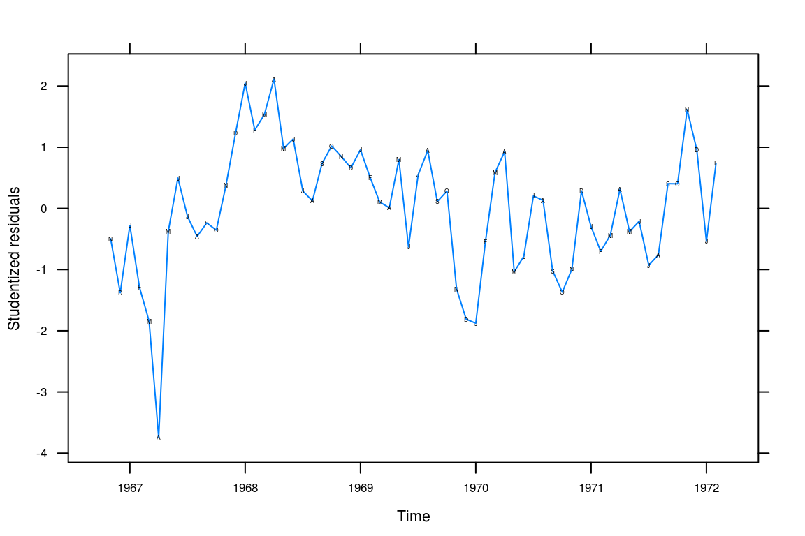

Chapter 3 Trends
3.1 Least squares estimation for linear regression trend
We begin by taking the partial derivatives with respect to \(\beta_0\).
\[ \frac{\partial}{\partial{\beta_0}} \mathcal{Q}(\beta_0, \beta_1) = -2\sum_{t=1}^n (Y_t - \beta_0 - \beta_1 t) \]
We set it to \(0\) and from this retrieve
\begin{align*} -2\sum_{t=1}^n (Y_t - \beta_0 - \beta_1 t) = & 0 \implies \\ \sum_{t=1}^n Y_t - n\beta_0 - \beta_1 \sum_{t=1}^n t = & 0 \implies \\ \beta_0 = \frac{\sum_{t=1}^n Y_t - \beta_1 \sum_{t=1}^n t}{n} = & \bar{Y} - \beta_1 \bar{t} \end{align*}Next, we take the partial derivative with respect to \(\beta_1\);
\[ \frac{\partial}{\partial{\beta_1}} \mathcal{Q}(\beta_0, \beta_1) = -2\sum_{t=1}^n t(Y_t - \beta_0 - \beta_1 t) \]
Setting this to \(0\) as well, multiplying both sides with \(-1/2\) and rearranging results in
\begin{align*} -2\sum_{t=1}^n t (Y_t - \beta_0 - \beta_1 t) = & 0 \implies \\ \beta_1 \sum_{t=1}^n t^2 = & \sum_{t=1}^n Y_t t - \beta_0 \sum_{t=1}^n t \end{align*}Then, substituting with the result gained previously for \(\beta_0\), we get
\begin{align*} \beta_1 \sum_{t=1}^n t^2 = & \sum_{t=1}^n Y_t t - \left( \frac{\sum_{t=1}^n Y_t}{n} - \beta_1 \frac{\sum_{t=1}^n}{n} \right) \sum_{t=1}^n t \iff \\ \beta_1 \left( \sum_{t=1}^n t^2 - \frac{(\sum_{t=1}^n t)^2}{n} \right) = & \sum_{t=1}^n Y_t t - \frac{\sum_{t=1}^n Y_t \sum_{t=1}^n t}{n} \iff \\ \beta_1 = & \frac{n\sum_{t=1}^n Y_tt - \sum_{t=1}^nY_t \sum_{t=1}^n t}{n \sum_{t=1}^n t^2 - \left( \sum_{t=1}^n t \right)^2} = \frac{\sum_{t=1}^n (Y_t - \bar{Y})(t-\bar{t})}{\sum_{t=1}^n (t-\bar{t})^2} \quad \square \end{align*}3.2 Variance of mean estimator
\[ \bar{Y} = \frac{1}{n}\sum_{t=1}^n Y_t = \frac{1}{n} \sum_{t=1}^n(\mu + e_t - e_{t-1}) = \mu + \frac{1}{n} \sum_{t=1}^n (e_t - e_{t-1}) = \mu + \frac{1}{n}(e_n - e_0) \]
\[ \text{Var}[\bar{Y}] = \text{Var}[\mu + \frac{1}{n}(e_n - e_0)] = \frac{1}{n^2}(\sigma_e^2 + \sigma_e^2) = \frac{2\sigma_e^2}{n^2} \]
It is uncommon for the sample size to have such a large impact on the variance estimator for the sample mean.
Setting \(Y_t = \mu + e_t\) instead gives
\[ \bar{Y} = \frac{1}{n}\sum_{t=1}^n Y_t = \frac{1}{n} \sum_{t=1}^n(\mu + e_t) = \mu + \frac{1}{n} \sum_{t=1}^n e_t \]
\[ \text{Var}[\bar{Y}] = \text{Var} \left[ \mu + \frac{1}{n} \sum_{t=1}^n e_t \right] = 0 + \frac{1}{n^2} \times n \sigma_e^2 = \frac{\sigma_e^2}{n}. \]
3.3 Variance of mean estimator #2
\[ \bar{Y} = \frac{1}{n} \sum_{t=1}^n(\mu + e_t + e_{t-1}) = \mu + \frac{1}{n} \sum_{t=1}^n (e_t + e_{t-1}) = \mu + \frac{1}{n} \left( e_n + e_0 + 2 \sum_{t=1}^{n-1} t \right) \]
\[ \text{Var}[\bar{Y}] = \frac{1}{n^2}(\sigma_e^2 + \sigma_e^2 + 4(n-1) \sigma_e^2 ) = \frac{1}{n^2}2(2n-1)\sigma_e^2 \]
Setting \(Y_t = \mu + e_t\) instead gives the result from 3.2. We note that for large \(n\) the variance if approximately four times larger with \(Y_t = \mu + e_t + e_{t-1}\).
3.4 Hours
a
library(TSA)
data("hours")
xyplot(hours)
Figure 3.1: Monthly values of the average hours worked per week in the U.S. manufacturing sector.
In Figure 1 we see a steep incline between 83 and 84. There also appears to be a seasonal trend with generally longer work hours later in the year apart from the summer; 1984, however, does not exhibit as clear a pattern.
b
months <- c("J", "A", "S", "O", "N", "D", "J", "F", "M", "A", "M", "J")
xyplot(hours, panel = function(x, y, ...) {
panel.xyplot(x, y, ...)
panel.text(x = x, y = y, labels = months)
})Figure 3.2: Monthly values of average hours worked per week with superposed initials of months.
Here, in Figure 2, our interpretation is largely the same. It is clear that December stands out as the month with the longest weekly work hours whilst February and January are low-points, demonstrating a clear trend.
3.5 Wages
a
data("wages")
xyplot(wages, panel = function(x, y, ...) {
panel.xyplot(x, y, ...)
panel.text(x, y, labels = months)
})Figure 3.3: Monthly average hourly wages for workers in the U.S. apparel and textile industry.
There is a positive trend with seasonality: August is a low-point for wages. Generally, there seems to be larger increases in the fall.
b
wages_fit1 <- lm(wages ~ time(wages))
summary(wages_fit1)##
## Call:
## lm(formula = wages ~ time(wages))
##
## Residuals:
## Min 1Q Median 3Q Max
## -0.2383 -0.0498 0.0194 0.0585 0.1314
##
## Coefficients:
## Estimate Std. Error t value Pr(>|t|)
## (Intercept) -5.49e+02 1.11e+01 -49.2 <2e-16 ***
## time(wages) 2.81e-01 5.62e-03 50.0 <2e-16 ***
## ---
## Signif. codes: 0 '***' 0.001 '**' 0.01 '*' 0.05 '.' 0.1 ' ' 1
##
## Residual standard error: 0.083 on 70 degrees of freedom
## Multiple R-squared: 0.973, Adjusted R-squared: 0.972
## F-statistic: 2.5e+03 on 1 and 70 DF, p-value: <2e-16wages_rst <- rstudent(wages_fit1)c
xyplot(wages_rst ~ time(wages_rst), type = "l",
xlab = "Time", ylab = "Studentized residuals")
(#fig:wages_resid)Residual plot
We still seem to have autocorrelation related to the time and not white noise.
d
wages_fit2 <- lm(wages ~ time(wages) + I(time(wages)^2))
summary(wages_fit2)##
## Call:
## lm(formula = wages ~ time(wages) + I(time(wages)^2))
##
## Residuals:
## Min 1Q Median 3Q Max
## -0.14832 -0.04144 0.00156 0.05009 0.13984
##
## Coefficients:
## Estimate Std. Error t value Pr(>|t|)
## (Intercept) -8.49e+04 1.02e+04 -8.34 4.9e-12 ***
## time(wages) 8.53e+01 1.03e+01 8.31 5.4e-12 ***
## I(time(wages)^2) -2.14e-02 2.59e-03 -8.28 6.1e-12 ***
## ---
## Signif. codes: 0 '***' 0.001 '**' 0.01 '*' 0.05 '.' 0.1 ' ' 1
##
## Residual standard error: 0.059 on 69 degrees of freedom
## Multiple R-squared: 0.986, Adjusted R-squared: 0.986
## F-statistic: 2.49e+03 on 2 and 69 DF, p-value: <2e-16wages_rst2 <- rstudent(wages_fit2)e
xyplot(wages_rst2 ~ time(wages_rst), type = "l",
xlab = "Time", ylab = "Studentized residuals")
(#fig:wages_quad_resid)Residual plot for our quadratic model.
This looks more like random noise but there is still clear autocorrelation between the fitted residuals that we have yet to capture in our model.
3.6 Beer sales
a
data(beersales)
xyplot(beersales)Figure 3.4: Monthly U.S. beer sales.
Clear seasonal trends. There is an initial positive trend from 1975 to around 1981 that then levels out.
b
months <- c("J", "F", "M", "A", "M", "J", "J", "A", "S", "O", "N", "D")
xyplot(beersales,
panel = function(x, y, ...) {
panel.xyplot(x, y, ...)
panel.text(x, y, labels = months)
})
Figure 3.5: Monthly U.S. beer sales annotated with the months’ initials.
It is now evident that the peaks are in the warm months and the slump in the winter and fall months. December is a particular low point, while May, June, and July seem to be the high points.
c
beer_fit1 <- lm(beersales ~ season(beersales))
pander(summary(beer_fit1))| Estimate | Std. Error | t value | Pr(>|t|) | |
|---|---|---|---|---|
| season(beersales)February | -0.1426 | 0.3732 | -0.382 | 0.7029 |
| season(beersales)March | 2.082 | 0.3732 | 5.579 | 8.771e-08 |
| season(beersales)April | 2.398 | 0.3732 | 6.424 | 1.151e-09 |
| season(beersales)May | 3.599 | 0.3732 | 9.643 | 5.322e-18 |
| season(beersales)June | 3.85 | 0.3732 | 10.31 | 6.813e-20 |
| season(beersales)July | 3.769 | 0.3732 | 10.1 | 2.812e-19 |
| season(beersales)August | 3.609 | 0.3732 | 9.669 | 4.494e-18 |
| season(beersales)September | 1.573 | 0.3732 | 4.214 | 3.964e-05 |
| season(beersales)October | 1.254 | 0.3732 | 3.361 | 0.0009484 |
| season(beersales)November | -0.04797 | 0.3732 | -0.1285 | 0.8979 |
| season(beersales)December | -0.4231 | 0.3732 | -1.134 | 0.2585 |
| (Intercept) | 12.49 | 0.2639 | 47.31 | 1.786e-103 |
| Observations | Residual Std. Error | \(R^2\) | Adjusted \(R^2\) |
|---|---|---|---|
| 192 | 1.056 | 0.7103 | 0.6926 |
All comparisons are made against january. The model helpfully explains approximately 0.71 of the variance and is statistically significant. Most of the factors are significant (mostly the winter months as expected).
d
xyplot(rstudent(beer_fit1) ~ time(beersales), type = "l",
xlab = "Time", ylab = "Studentized residuals",
panel = function(x, y, ...) {
panel.xyplot(x, y, ...)
panel.xyplot(x, y, pch = as.vector(season(beersales)), col = 1)
})Figure 3.6: Beer sales residual plot.
Looking at the residuals in 3.6 We don’t have a good fit to our data; in particular, wee’re not capturing the long-term trend.
e
beer_fit2 <- lm(beersales ~ season(beersales) + time(beersales) +
I(time(beersales) ^ 2))
pander(summary(beer_fit2))| Estimate | Std. Error | t value | Pr(>|t|) | |
|---|---|---|---|---|
| season(beersales)February | -0.1579 | 0.209 | -0.7554 | 0.451 |
| season(beersales)March | 2.052 | 0.209 | 9.818 | 1.864e-18 |
| season(beersales)April | 2.353 | 0.209 | 11.26 | 1.533e-22 |
| season(beersales)May | 3.539 | 0.209 | 16.93 | 6.063e-39 |
| season(beersales)June | 3.776 | 0.209 | 18.06 | 4.117e-42 |
| season(beersales)July | 3.681 | 0.209 | 17.61 | 7.706e-41 |
| season(beersales)August | 3.507 | 0.2091 | 16.78 | 1.698e-38 |
| season(beersales)September | 1.458 | 0.2091 | 6.972 | 5.89e-11 |
| season(beersales)October | 1.126 | 0.2091 | 5.385 | 2.268e-07 |
| season(beersales)November | -0.1894 | 0.2091 | -0.9059 | 0.3662 |
| season(beersales)December | -0.5773 | 0.2092 | -2.76 | 0.00638 |
| time(beersales) | 71.96 | 8.867 | 8.115 | 7.703e-14 |
| I(time(beersales)^2) | -0.0181 | 0.002236 | -8.096 | 8.633e-14 |
| (Intercept) | -71498 | 8791 | -8.133 | 6.932e-14 |
| Observations | Residual Std. Error | \(R^2\) | Adjusted \(R^2\) |
|---|---|---|---|
| 192 | 0.5911 | 0.9102 | 0.9036 |
This model fits the data better, explaining roughly 0.91 of the variance.
f
xyplot(rstudent(beer_fit2) ~ time(beersales), type = "l",
xlab = "Time", yla = "Studentized residuals",
panel = function(x, y, ...) {
panel.xyplot(x, y, ...)
panel.xyplot(x, y, pch = as.vector(season(beersales)), col = 1)
})Figure 3.7: Beer sales residual plot from the quadratic fit.
Many of the values are still not being predicted successfully but at least we’re able to model the long term trend better.
3.7 Winnebago
a
data(winnebago)
xyplot(winnebago)Figure 3.8: Monthly unit sales of recreational vehicles from Winnebago.
b
winn_fit1 <- lm(winnebago ~ time(winnebago))
summary(winn_fit1) %>%
pander()| Estimate | Std. Error | t value | Pr(>|t|) | |
|---|---|---|---|---|
| time(winnebago) | 200.7 | 17.03 | 11.79 | 1.777e-17 |
| (Intercept) | -394886 | 33540 | -11.77 | 1.87e-17 |
| Observations | Residual Std. Error | \(R^2\) | Adjusted \(R^2\) |
|---|---|---|---|
| 64 | 209.7 | 0.6915 | 0.6865 |
The model is significant and explains 0.69 of the variance.
xyplot(rstudent(winn_fit1) ~ time(winnebago), type = "l",
xlab = "Time", ylab = "Studentized residuals")Figure 3.9: Residuals for the linear fit for the winnebago data.
The fit is poor (Figure ??. It is not random and it is clear that we’re making worse predictions for later yers.
c
To produce a better fit, we transform the outcome with the natural logarithm.
winn_fit_log <- lm(log(winnebago) ~ time(winnebago))
pander(summary(winn_fit_log))| Estimate | Std. Error | t value | Pr(>|t|) | |
|---|---|---|---|---|
| time(winnebago) | 0.5031 | 0.03199 | 15.73 | 2.575e-23 |
| (Intercept) | -984.9 | 62.99 | -15.64 | 3.45e-23 |
| Observations | Residual Std. Error | \(R^2\) | Adjusted \(R^2\) |
|---|---|---|---|
| 64 | 0.3939 | 0.7996 | 0.7964 |
The model is better, explaining almost 0.8 of the variance.
d
xyplot(rstudent(winn_fit_log) ~ time(winnebago), type = "l",
xlab = "Time", ylab = "Studentized residuals",
panel = function(x, y, ...) {
panel.xyplot(x, y, ...)
panel.xyplot(x, y, pch = as.vector(season(winnebago)), col = 1)
})Figure 3.10: Residual plot after natural log transformation.
This looks more like random noise (Figure ??. Values still cling together somewhat but it is certainly better than the linear model. We’re still systematically overpredictinig the values for some months, however.
e
winn_fit_seasonal <- lm(log(winnebago) ~ season(winnebago) + time(winnebago))
pander(summary(winn_fit_seasonal))| Estimate | Std. Error | t value | Pr(>|t|) | |
|---|---|---|---|---|
| season(winnebago)February | 0.6244 | 0.1818 | 3.434 | 0.001188 |
| season(winnebago)March | 0.6822 | 0.1909 | 3.574 | 0.0007793 |
| season(winnebago)April | 0.8096 | 0.1908 | 4.243 | 9.301e-05 |
| season(winnebago)May | 0.8695 | 0.1907 | 4.559 | 3.246e-05 |
| season(winnebago)June | 0.8631 | 0.1907 | 4.526 | 3.627e-05 |
| season(winnebago)July | 0.5539 | 0.1907 | 2.905 | 0.00542 |
| season(winnebago)August | 0.5699 | 0.1907 | 2.988 | 0.004305 |
| season(winnebago)September | 0.5757 | 0.1907 | 3.018 | 0.00396 |
| season(winnebago)October | 0.2635 | 0.1908 | 1.381 | 0.1733 |
| season(winnebago)November | 0.2868 | 0.1819 | 1.577 | 0.1209 |
| season(winnebago)December | 0.248 | 0.1818 | 1.364 | 0.1785 |
| time(winnebago) | 0.5091 | 0.02571 | 19.8 | 1.351e-25 |
| (Intercept) | -997.3 | 50.64 | -19.69 | 1.718e-25 |
| Observations | Residual Std. Error | \(R^2\) | Adjusted \(R^2\) |
|---|---|---|---|
| 64 | 0.3149 | 0.8946 | 0.8699 |
The fit is improved further. We have a R2 of 0.89 and significance for most of our seasonal means as well as the time trend.
f
xyplot(rstudent(winn_fit_seasonal) ~ time(winnebago), type = "l",
xlab = "Time", ylab = "Studentized residuals",
panel = function(x, y, ...) {
panel.xyplot(x, y, ...)
panel.xyplot(x, y, col = 1, pch = as.vector(season(winnebago)))
})
This is acceptable even if our residuals are quite large for some of the values, notably at the start of the series.
3.8 Retail
a
data(retail)
xyplot(retail, panel = function(x, y, ...) {
panel.xyplot(x, y, ...)
panel.xyplot(x, y, pch = as.vector(season(retail)), col = 1)
})Figure 3.11: Total retail sales in the U.K. in billions pounds.
Plotting the retail sales trend there seems to be a long-term linear trend as well as heavy seasonality in tht December – and to slighter extent also November and October – exhibit regular surges in retail sales.
b
retail_lm <- lm(retail ~ season(retail) + time(retail))
pander(summary(retail_lm))| Estimate | Std. Error | t value | Pr(>|t|) | |
|---|---|---|---|---|
| season(retail)February | -3.015 | 1.29 | -2.337 | 0.02024 |
| season(retail)March | 0.07469 | 1.29 | 0.05791 | 0.9539 |
| season(retail)April | 3.447 | 1.305 | 2.641 | 0.008801 |
| season(retail)May | 3.108 | 1.305 | 2.381 | 0.01803 |
| season(retail)June | 3.074 | 1.305 | 2.355 | 0.01932 |
| season(retail)July | 6.053 | 1.305 | 4.638 | 5.757e-06 |
| season(retail)August | 3.138 | 1.305 | 2.404 | 0.01695 |
| season(retail)September | 3.428 | 1.305 | 2.626 | 0.009187 |
| season(retail)October | 8.555 | 1.305 | 6.555 | 3.336e-10 |
| season(retail)November | 20.82 | 1.305 | 15.95 | 1.274e-39 |
| season(retail)December | 52.54 | 1.305 | 40.25 | 3.169e-109 |
| time(retail) | 3.67 | 0.04369 | 84 | 5.206e-181 |
| (Intercept) | -7249 | 87.24 | -83.1 | 6.41e-180 |
| Observations | Residual Std. Error | \(R^2\) | Adjusted \(R^2\) |
|---|---|---|---|
| 255 | 4.278 | 0.9767 | 0.9755 |
This seems like an effective model, explaining 0.98 of the variance in retail sales.
c
xyplot(rstudent(retail_lm) ~ time(retail), type = "l",
xlab = "Time", ylab = "Studentized residuals",
panel = function(x, y, ...) {
panel.xyplot(x, y, ...)
panel.xyplot(x, y, pch = as.vector(season(retail)), col = 1)
})Figure 3.12: Studentized residuals for our seasonality + linear model of retail sales.
The residual plot (Figure 3.12) tells a different story: we’re underpredicting values for early period and overpredicting values for the later years – however, this should be an easy fix.
3.9 Prescriptions
a
data(prescrip)
xyplot(prescrip, ylab = "Prescription costs",
panel = function(x, y, ...) {
panel.xyplot(x, y, ...)
panel.xyplot(x, y, pch = as.vector(season(prescrip)), col = 1)
})Figure 3.13: Monthly U.S. prescription costs.
Figure 3.13 shows a clear, smooth, and cyclical seasonal trend. Values are genereally higher for the summer months and there seems to be an exponential increase long-term.
b
pchange <- diff(prescrip) / prescrip
xyplot(pchange ~ time(prescrip), type = "l",
panel = function(x, y, ...) {
panel.xyplot(x, y, ...)
panel.xyplot(x, y, pch = as.vector(season(pchange)), col = 1)
})Figure 3.14: Percentage changes from month-to-month in prescription costs.
The monthly percentage difference series looks rather stationary.
c
pres_cos <- lm(pchange ~ harmonic(pchange))
pander(summary(pres_cos))| Estimate | Std. Error | t value | Pr(>|t|) | |
|---|---|---|---|---|
| harmonic(pchange)cos(2pit) | -0.006605 | 0.003237 | -2.041 | 0.04542 |
| harmonic(pchange)sin(2pit) | 0.01612 | 0.003208 | 5.026 | 4.291e-06 |
| (Intercept) | 0.01159 | 0.002282 | 5.08 | 3.508e-06 |
| Observations | Residual Std. Error | \(R^2\) | Adjusted \(R^2\) |
|---|---|---|---|
| 67 | 0.01862 | 0.3126 | 0.2912 |
We explain 0.31 of the variance. The model is significant though.
d
xyplot(rstudent(pres_cos) ~ time(prescrip), type = "l")Figure 3.15: Residuals for our cosine model.
The residual plot in Figure ?? looks rather random.